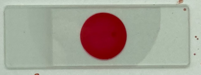

Season 1


Michael Donovan era um enfermeiro que sequestrava e assassinava
crianças. Dexter o confronta em um armazém, revelando evidências
de seus crimes. Após uma breve conversa, Dexter o mata com uma facada
no coração, iniciando sua jornada como vigilante.